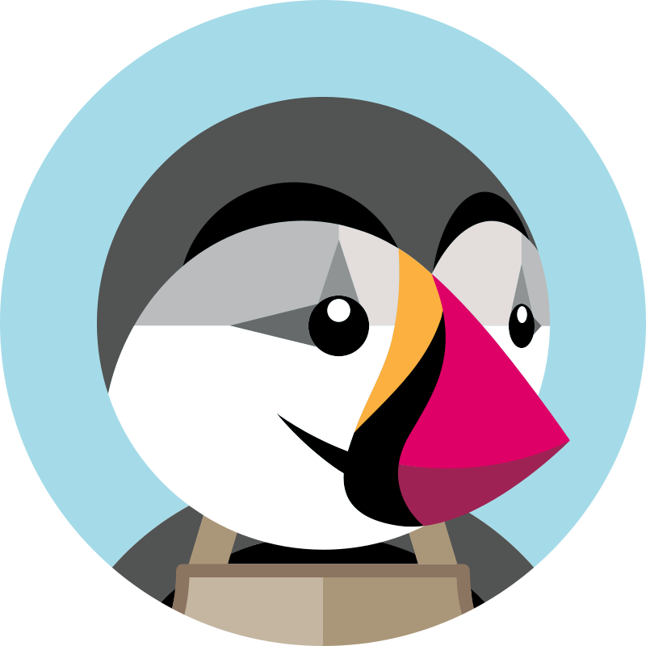
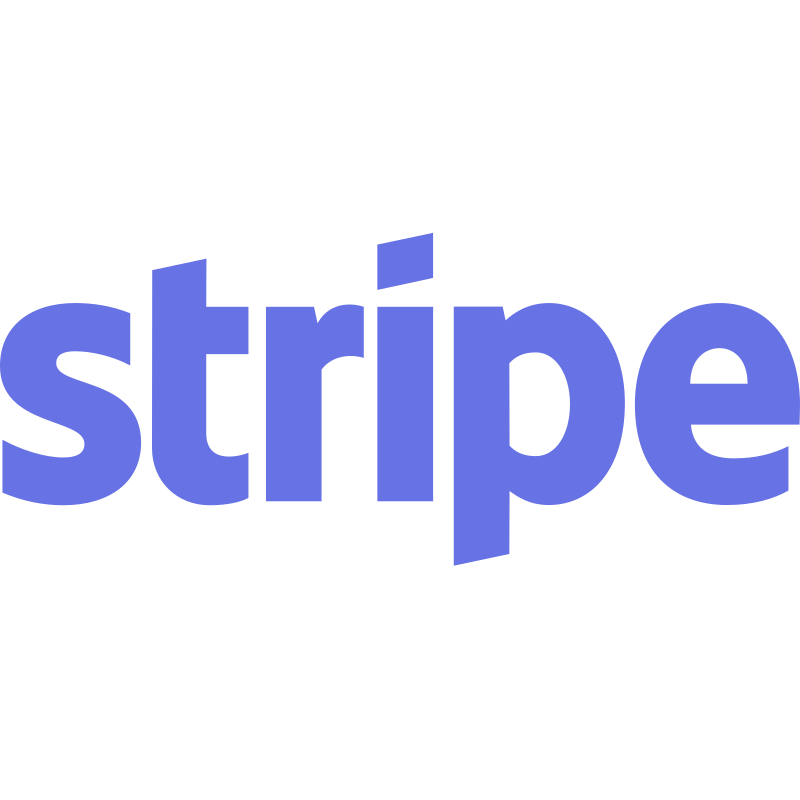

Experiencia
Cargoffer
Programador FullStack
2023-04-28 | Actualidad- Desarrollo e implementación con Angular e Ionic utilizando TypeScript para crear un front optimizado y dinámico. 💻🎨
- Uso del framework Express.js con JavaScript para construir un back sólido y adaptable. 🌐🔧
- Desarrollo con Flask en Python, aprovechando su flexibilidad y facilidad de uso. 🐍🌐
- Experiencia en el uso de Next.js con React para crear aplicaciones web modernas y dinámicas. ⚛️🌐
- Gestión eficiente de datos utilizando MongoDB, garantizando un almacenamiento y recuperación de datos óptimos. 📊💾
- Colaboración efectiva con GIT para el control de versiones, facilitando la colaboración en equipo y la gestión del código fuente. 🤝🔗
- Dominio de herramientas e2e como Playwright y Puppeteer. 🛠️🤖
- Optimización de procesos de datos y consultas en MongoDB para mejorar el rendimiento y la eficiencia de las aplicaciones. 🚀🔍
- Implementación de la plataforma de pago de Stripe para transacciones seguras y eficaces. 💵🫰
- Diseño de interfaces utilizando Figma. 🎨

Minsait
Técnico de software
2021-06-01 | 2022-10-14- Implementación y desarrollo utilizando los frameworks de Angular e Ionic con TypeScript. 🖥️
- Creación, modificación y despliegue de contenedores e imágenes de Docker para facilitar la infraestructura. 🐳
- Uso efectivo del Spring Framework para la gestión y optimización de procesos. 🌱
- Manipulación y mejora de asistentes de inteligencia artificial (IA) y chatbots contextuales en texto y voz (RASA) utilizando Python. 🤖
- Adaptación y actualización de código para garantizar la compatibilidad con diferentes navegadores, desde Internet Explorer hasta Edge. ğŸŒ
- Trabajo con bases de datos tanto SQL como NoSQL para el almacenamiento y gestión eficiente de datos. 🛢️
- Utilización de sistemas de control de versiones SVN y GIT para garantizar la colaboración efectiva y la gestión del código fuente. 🔄

DominioZero
Prácticas
2021-01-17 | 2021-03-25- Desarrollo de módulos en Prestashop. 💼
- Creación de sitios web en Wordpress utilizando PHP, HTML, CSS y JavaScript. ğŸŒ
- Utilización de diversos plugins de Wordpress, como WPBakery, Slider Revolution, WooCommerce, Justified Image Grid, entre otros. 🛠️
- Optimización de páginas web para mejorar la experiencia del usuario y el rendimiento. 🚀

MasLenovo
Sistemas y reparación de hardware
2020-09-27 | 2020-11-05- Montaje y mantenimiento de sistemas y componentes informáticos. 💻
- Instalación y mantenimiento de sistemas operativos, tanto individuales como masivos, incluyendo maquetación e instalación de software ofimático. 🛠️
- Reparación de ordenadores portátiles, de sobremesa y dispositivos móviles. 📱
- Mantenimiento y edición de plugins de WordPress para la optimización de sitios web. ğŸŒ
- Creación de mockups para el diseño de páginas web. 🎨
Nortempo
Becario de Sistemas
2019-09-09 | 2019-12-08- Montaje y mantenimiento de sistemas y componentes informáticos. 💻
- Instalación y mantenimiento de sistemas operativos, tanto individuales como masivos, incluyendo maquetación. 🛠️
- Instalación y mantenimiento de redes para la transmisión de datos. ğŸŒ
- Acceso y explotación de bases de datos relacionales. 📊
- Acceso y mantenimiento de entornos en la nube (servidores de nube) asà como herramientas en la nube (Office 365...). ☁️
- Acceso y administración de Active Directory (creación de usuarios de dominio, mantenimiento...). 👥
- Gestión de incidencias y documentación. 📝

Futuro Digitale
Prácticas
2019-03-30 | 2019-06-14- Mantenimiento de una página web y su base de datos. 🖥️
- Creación de software para diversos fines. 💻
- Manejo de Google Sites para la gestión de contenido web. ğŸŒ
- Comunicación en inglés con colegas de la empresa para colaboraciones y proyectos. ğŸŒ
Habilidades
Frontend
-
 Angular
Angular
-
 Astro
Astro
-
 CSS
CSS
-
 HTML5
HTML5
-
 Ionic
Ionic
-
 JavaScript
JavaScript
- Next.js
-
 React
React
-
 Sass
Sass
-
 TypeScript
TypeScript
Backend
-
 Express.js
Express.js
-
 Flask
Flask
-
 Java
Java
-
 Node.js
Node.js
-
 PHP
PHP
-
 Python
Python
-
 Spring
Spring
Otras
-
 Android
Android
-
 Docker
Docker
-
 Figma
Figma
-
 Git
Git
-
 GitHub
GitHub
-
 Linux
Linux
-
 MariaDB
MariaDB
-
 Windows
Windows
-
 MongoDB
MongoDB
-
 MySQL
MySQL
-  PrestaShop
-  Stripe
-
 Unity
Unity
-
 VSCode
VSCode
-
 Wordpress
Wordpress
Sobre mÃ
¡Hola! Soy un desarrollador Fullstack, siempre listo para abordar desafÃos y absorber conocimiento constantemente 🚀. Mi enfoque versátil me permite trabajar tanto en el Frontend como en el Backend con fluidez 💻🌟.
Algunas de mis fortalezas son:
- ğŸ› ï¸ Resolución de problemas: Disfruto superando obstáculos y encontrando soluciones creativas.
- 📅 Organización: Soy meticuloso en la planificación y ejecución de tareas.
- 📚 Gestión multitarea: Puedo manejar varios proyectos simultáneamente sin comprometer la calidad.
- 🤠Trabajo en equipo: Valoro la colaboración y la sinergia que se logra al trabajar en conjunto. Me gusta ayudar a mis compañer@s para mejorar de manera conjunta.
A lo largo de mi carrera, he aprendido a mejorar mi enfoque laboral. Aunque tiendo a ser perfeccionista, estoy trabajando para equilibrar la calidad y la eficiencia ⚖️. Reconozco la importancia de la colaboración en equipo, lo que acelera el proceso de resolución de problemas y fomenta un ambiente de aprendizaje continuo 🤝.
Contacto
¡En resumen, estoy en un viaje 🧳 constante de mejora personal y profesional! Cada dÃa, trabajo para ser más eficiente 🤖, colaborativo 🤠y adaptable en mi enfoque laboral 🧑‍💼. Estoy emocionado por las oportunidades de crecimiento 🪴 que me esperan y estoy comprometido a seguir evolucionando como profesional 💡.
Si deseas ponerte en contacto conmigo, no dudes en enviarme un mensaje. Estoy disponible para colaboraciones, consultas o simplemente para charlar sobre proyectos interesantes.
¡Hablemos! 🚀📩